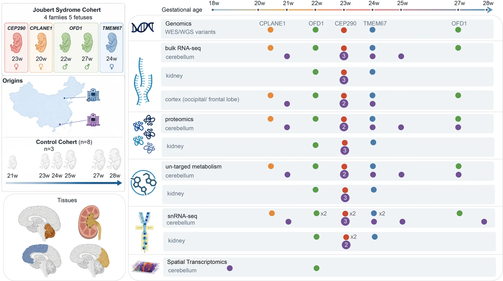
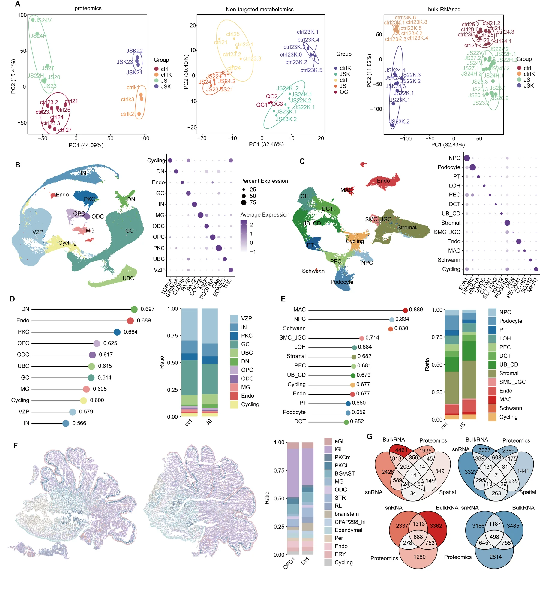

Input setup
Project paths, public sample sheets and documented data boundaries.
Human fetal disease atlas
A public-facing code and figure portal for snRNA-seq, cell-bin spatial transcriptomics, bulk RNA-seq, proteomics, metabolomics, lineage analysis, regulatory networks and cell-cell communication in fetal Joubert syndrome tissues.

Repository structure
The release is organized around controlled inputs and manuscript outputs. Sample metadata, cell-type contrasts, thresholds, figure-level plotting and downstream analyses are kept in short modules so reviewers and internship evaluators can understand the computational logic.
Project paths, public sample sheets and documented data boundaries.
Seurat snRNA-seq integration, kidney SoupX correction and doublet filtering.
Cell-bin Seurat construction, annotation, label transfer and spatial DEG.
DESeq2, GO, Monocle, scVelo, CellChat, pySCENIC and hdWGCNA workflows.
Interactive spatial atlas
The atlas uses coordinates plus per-gene expression vectors. This keeps the public site light: it draws expression in the browser instead of storing thousands of 20 MB pre-rendered images.

The demo page ships with example genes. The paired R exporter writes the same data layout from the annotated Seurat cell-bin object, so the demo data can be replaced with real JS/control coordinates and gene expression files.
Bulk omics
The RNA-seq workflow reads a sample sheet aligned to the supplementary tables and keeps kidney, cerebellum, frontal lobe and occipital lobe contrasts separate. Proteomics and metabolomics are handled in a second figure-focused script using the uploaded supplementary tables.
FeatureCounts to DESeq2, diffbox-style outputs, DEG tables, GO summaries, heatmaps and Venn plots.
Open RNA-seq workflowProtein DEG/GO, RNA-protein overlaps, metabolite heatmaps and JS/control summary figures.
Open protein/metabolite workflowMain figures
The site focuses on the main scientific arc and code. Supplementary figures are not displayed here, keeping the GitHub page readable and fast.
Cohort, sampled tissues and multi-omic design.
snRNA-seq, spatial mapping and cell-type overview.
Bulk RNA, protein and metabolite divergence.
Granule-cell lineage and spatial validation.
VZP, glial scaffold, regulons and signaling.
Kidney stromal remodeling and matrix activation.
NPC-derived nephron output failure.
UB/CD trajectory, injury programs and WNT/SPP1 signaling.
Code modules
These files are meant to be readable and runnable with approved local inputs. They do not expose private local paths or unnecessary per-sample Cell Ranger wrappers.
QC, Seurat integration, kidney ambient RNA correction and doublet-aware atlas construction.
Open workflowMarker annotation, JS/control cell-type contrasts, enrichment and composition summaries.
Open workflowGEF export, cell-bin Seurat object construction, label transfer, DEG and atlas data export.
Cell-bin build Atlas exportDESeq2 RNA-seq plus separate proteomics and metabolomics figure workflows.
RNA Protein/metabolitesMonocle2, Monocle3 and scVelo kept as independent workflows.
Monocle2 Monocle3 scVeloCellChat, pySCENIC and hdWGCNA modules for ligand-receptor, regulon and co-expression analysis.
CellChat pySCENIC hdWGCNAData boundary
Public BAM files support read-level provenance. The complete atlas workflows require processed matrix-level inputs, SoupX decisions, singlet calls, cluster-review exclusions and final annotation fields. The repository therefore releases controlled-input workflows that are public-safe and runnable when approved processed data are available locally.